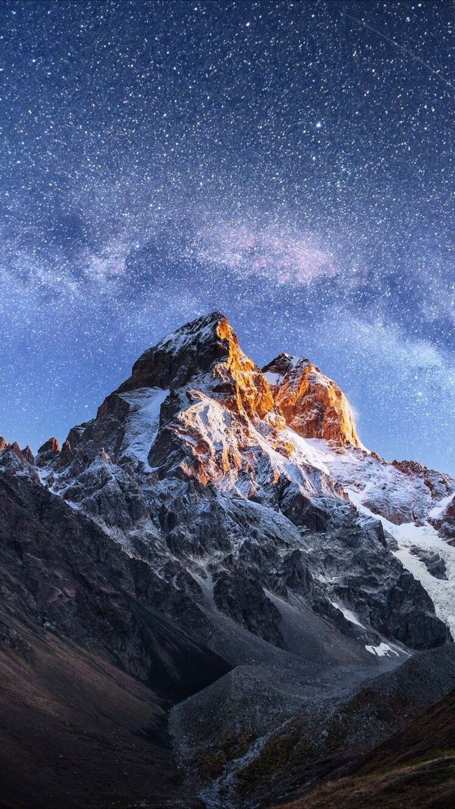
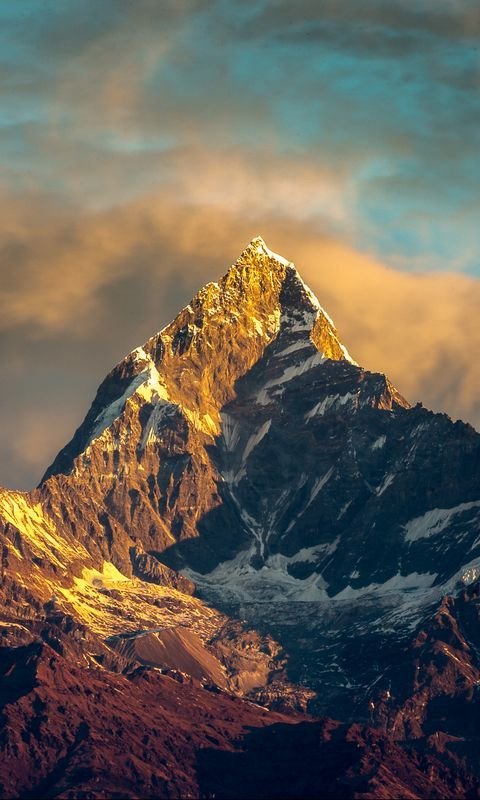
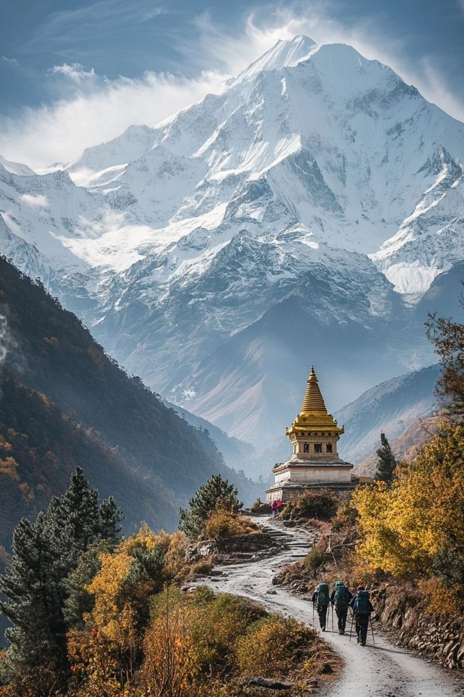
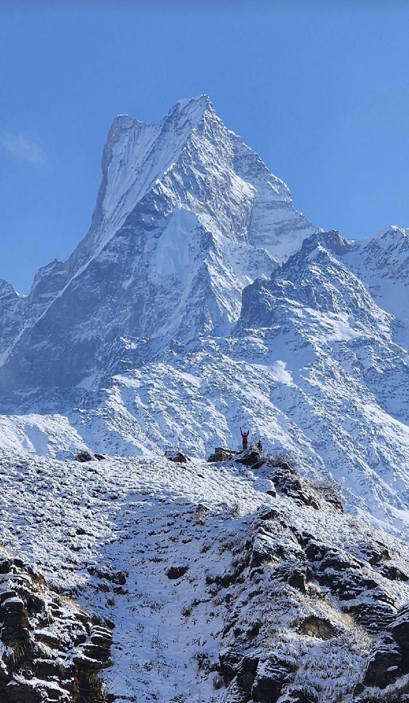
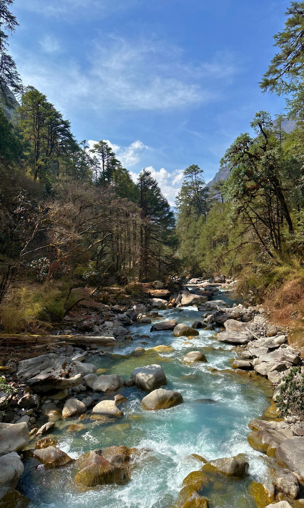
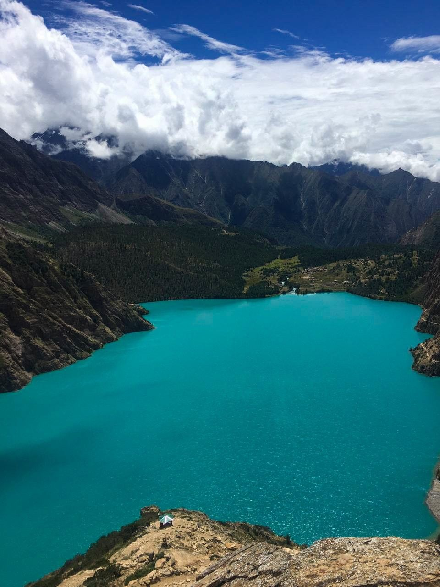

Everest Base Camp Trek
One of the world’s most iconic treks, leading to the foot of Mt. Everest. Experience Sherpa culture, ancient monasteries, and breathtaking Himalayan views. Best season: Spring & Autumn.
Nepal is a trekker’s paradise, blessed with the world’s highest peaks, diverse landscapes, and vibrant cultures. From the legendary Everest Base Camp to the serene Langtang Valley, trekking here is more than just an adventure — it’s a journey into the heart of the Himalayas.
Whether you’re looking for challenging high-altitude expeditions or short scenic hikes, Nepal offers something for everyone. Along the trails, you’ll encounter ancient monasteries, Sherpa and Tamang villages, terraced fields, and stunning alpine scenery that will leave you inspired. The best seasons for trekking are Spring (March–May) and Autumn (September–November).

One of the world’s most iconic treks, leading to the foot of Mt. Everest. Experience Sherpa culture, ancient monasteries, and breathtaking Himalayan views. Best season: Spring & Autumn.

A classic trek around the Annapurna Massif, crossing Thorong La Pass (5,416m). Known for diverse landscapes, from subtropical valleys to high alpine deserts. Suitable for seasoned trekkers.

A remote and less-crowded alternative to Annapurna, circling Mt. Manaslu (8,163m). Rich in Tibetan culture, dramatic scenery, and wild beauty. Restricted permit area.

A short and scenic trek near Pokhara offering close-up views of Machhapuchhre (Fishtail). Perfect for beginners or those short on time. Best done in Spring or Autumn.

A cultural and natural gem, just north of Kathmandu. Known as the “valley of glaciers,” it offers Tamang culture, yak pastures, and panoramic Himalayan peaks.

Located in Dolpo region, this trek leads to the turquoise waters of Phoksundo Lake. Culturally rich, remote, and one of the most mystical trekking experiences in Nepal.